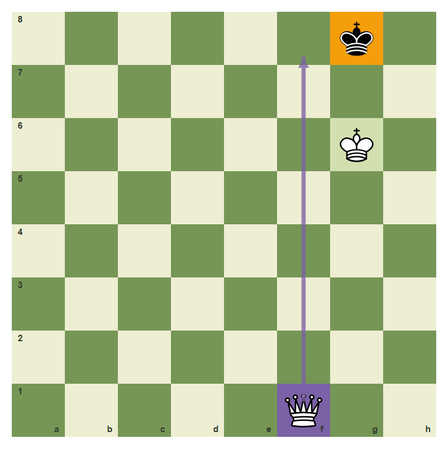
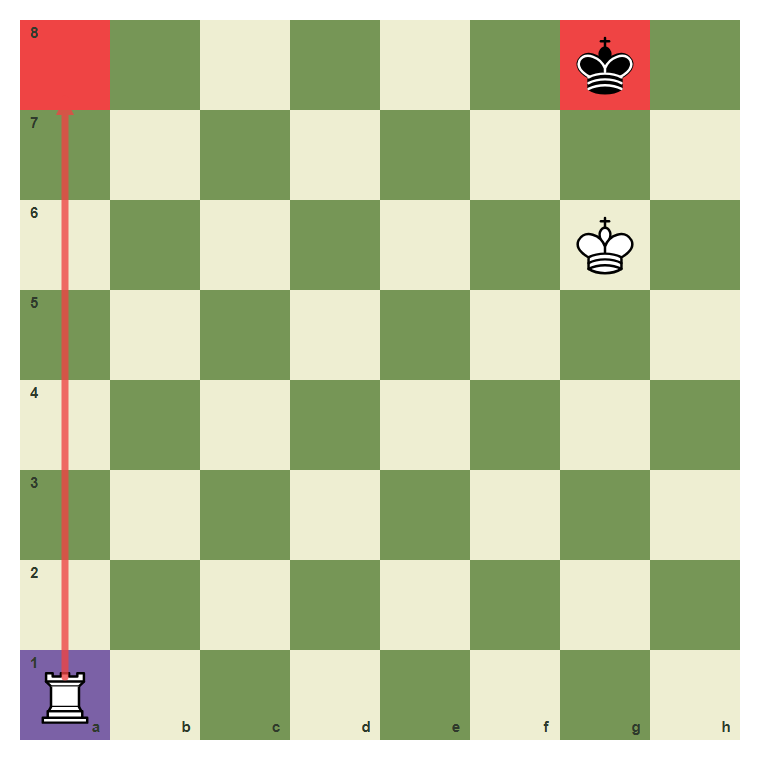
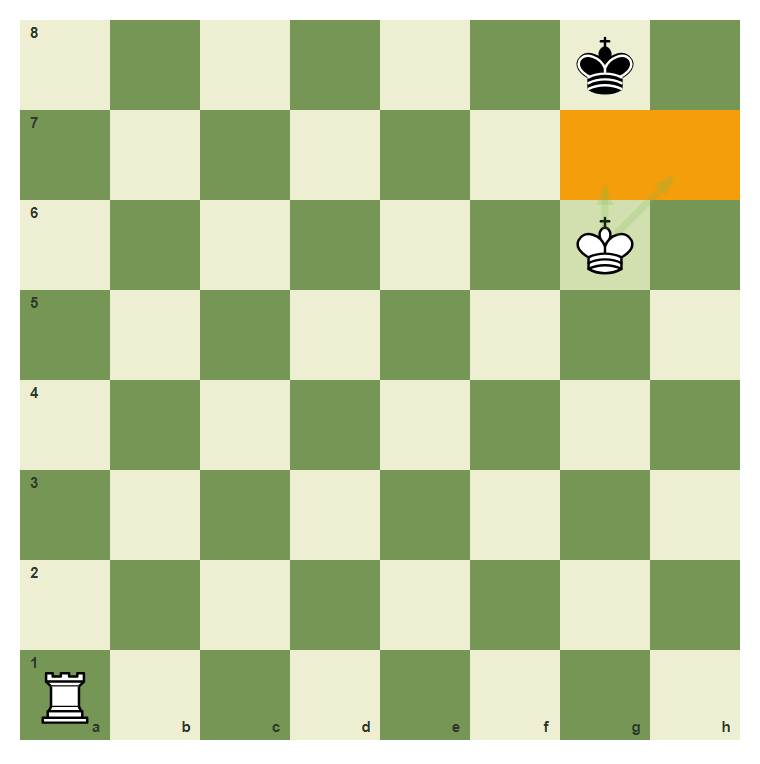
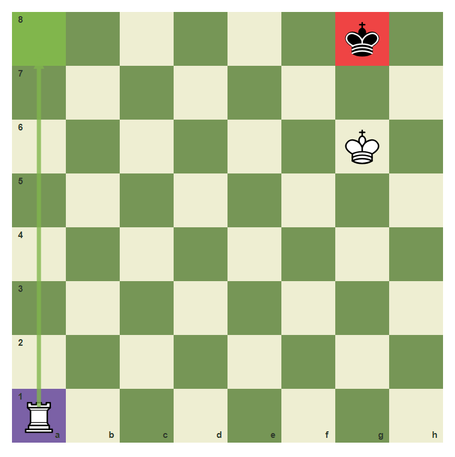
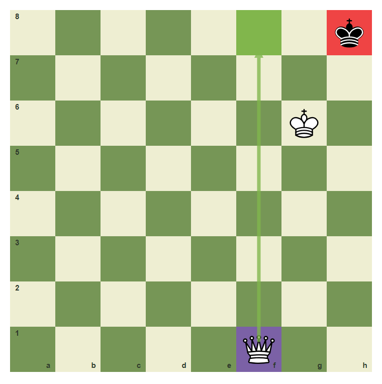
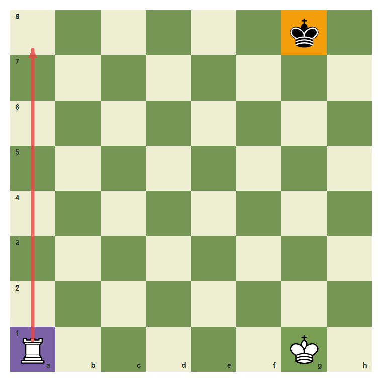

Basic Checkmates With Queen And Rook
Turn a winning position into checkmate.
- Use the queen or rook to cut off the king.
- Bring your king close enough to support mate.
- Deliver a final checking move.
Win The Won Game
A big material advantage is not enough. You still need checkmate. Queen and rook mates work by making a box, bringing the king closer, and giving the final check.
The queen builds a box

The queen can cut files and ranks while the king gives support.
The rook checks along a rank

The rook can travel to a8 and check across the 8th rank.
The king takes escape squares

The king on g6 controls g7 and h7, so the enemy king has fewer exits.
Final rook mate pattern

Rook to a8 is the final checking move in this pattern.
Queen mate uses the same idea

The queen should cut the king while your own king guards escape.
Deliver rook mate
Move the rook from a1 to a8.

Common mistake: check without a box
Random checks let the king run. First make a box and bring support.

The rook checks, but the white king is too far to control escape squares.
Chapter Checkpoint
Queen and rook mates usually need:
Queen and rook mates usually need:
The final mating move must give:
The final mating move must give:
Your king helps mate by:
Your king helps mate by: